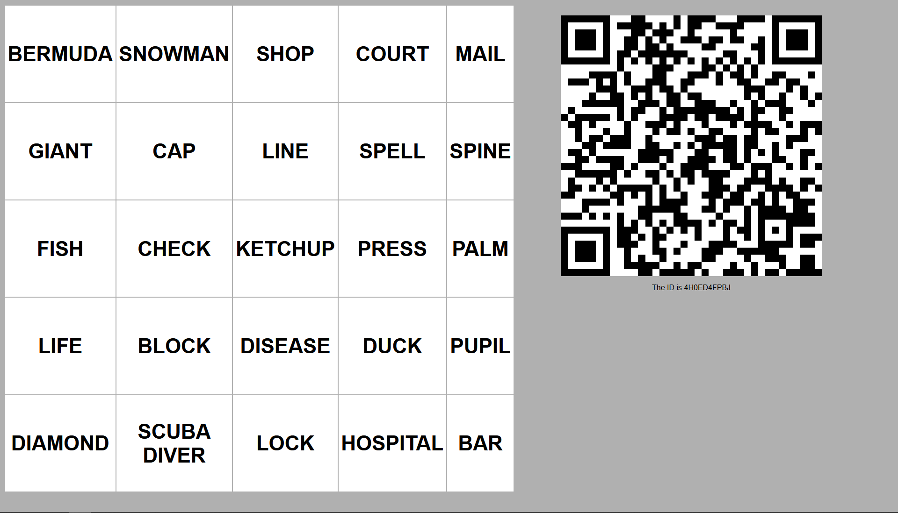
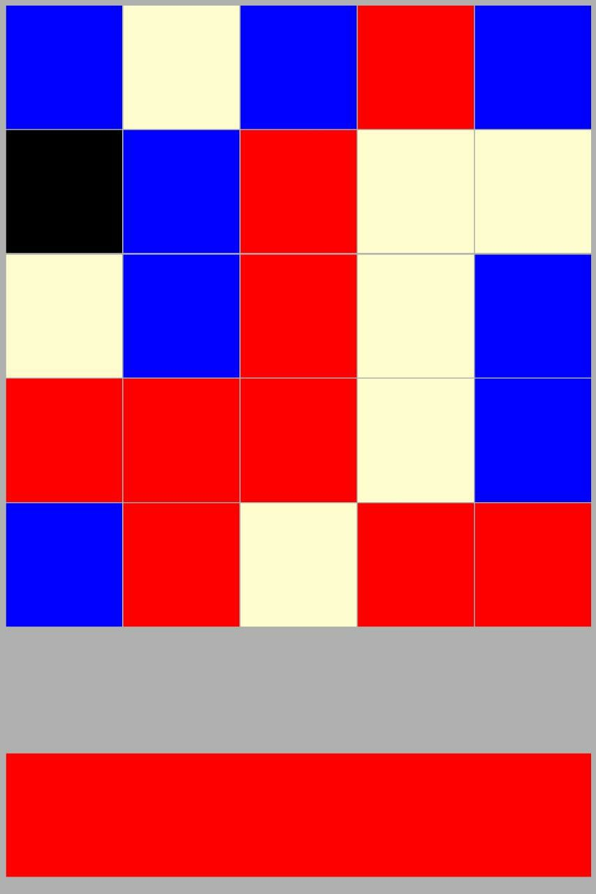

Instructions
-
First, split your group of 4 (or more) people into two teams. Assign each team a color, Red or Blue.
-
At the beginning of a round, choose one player from your team to be the Codemaster. This person is the person who gives the clues. The rest of your team will be involved in guessing the words.
-
Click on "Start New Game." You should see a 5 x 5 grid of words, and a QR Code. Below the QR Code, you should see "The ID is ..." This works best on a wide display.

-
The two Codemasters should scan the QR Code using their phone, which should bring up a 5 x 5 color grid (see below for an example). This works best on a narrow display (where the height is larger than the width). iPhone users should already have the QR Code scanning functionality in their Camera app. Android users can use Google Lens to scan it, or download one of the many apps from the Play Store. We recommend QR & Barcode Scanner from Gamma Play. If you don't want to download a third party app, you can also navigate to , click on View Key, and type in the ID. Don't worry about capitalization, it is case insensitive

-
Each cell in the color grid dictates what team the corresponding cell in the word grid belongs to. The large cell at the bottom indicates what team is starting. So, in the above examples, Red starts, and they have to make their teammates guess the words Court, Line, Ketchup, and so on. Likewise, Blue has to make their teammates guess the words Bermuda, Shop, Mail, and so on. The cream colored cells belong to neither team. The black cell is also called the Assasin. If a team guesses the Assassin, they immediately lose the game.
-
The Codemasters then give clues. For more information on this, see the official rules
-
When a team guesses a word, click on the cell containing that word, and that cell's color will be revealed for all to see.
-
The winning team is the team that guesses all their words!